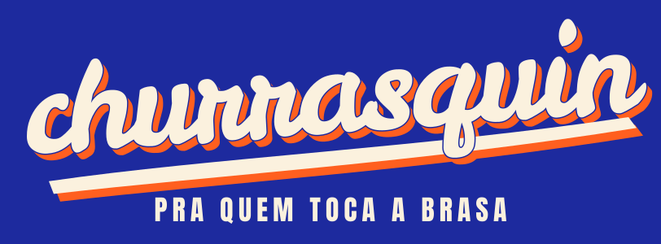
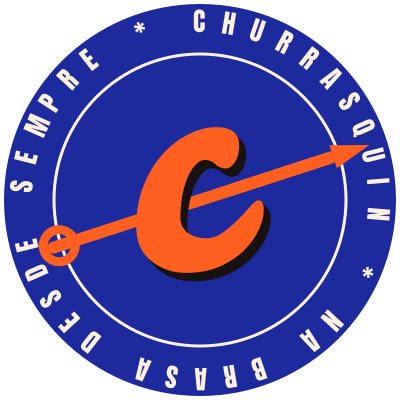

Guia de cortes

Um app que ajuda a turma a planejar, escolher o corte e acertar o ponto. Com a voz pintada à mão da placa de espetinho da esquina.
Toda cidade do Brasil tem uma: a placa de compensado na beira da estrada, “espetinho R$ 8”, letra cursiva gorda com sombra de bloco e uma condensada embaixo, filete duplo, duas cores e nada mais. É honesta, alegre, legível a 50 metros.
O churrasquin pega essa gramática e a leva para um app de auxílio: o script com sombra é a voz (o nome, os momentos de celebração), a condensada é a informação (quanto, quando, qual ponto), e o filete organiza tudo como num letreiro bem pintado.
O símbolo é o espeto atravessando o “c”: a ferramenta mais democrática do churrasco brasileiro. Ele vira padrão, ícone, timer e marcador no mapa do boi.

SeloRegra: no máximo duas cores fortes por tela. Laranja nunca vira texto pequeno sobre creme (2,6:1) — só campo, botão com texto carvão ou título ≥ 32 px sobre cobalto.
Espetos a −18° (o mesmo ângulo do símbolo) com faíscas-estrela de letreiro. Embalagem, splash, estados vazios.
Em bifes grossos (3 dedos) dobrados no espeto, gordura para fora. Sal grosso na hora. Não tire a capa.